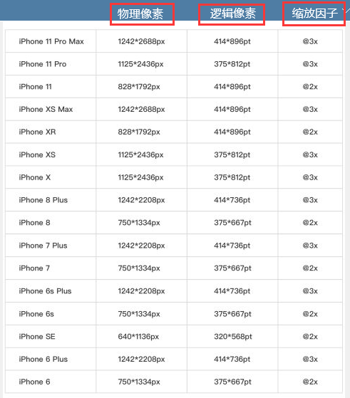

1、为什么Chrome里 iphone 11 是 414 px 而不是其他？为什么我 调用 window.screen.width=414
2、为什么网页在手机打开有时候有滚动条，有时候又没有，怎么样才能确保没有滚动条
3、为什么很多移动设计稿是750px？
4、为什么电脑显示的200px我在手机里显示的200px不一样大小?
6、什么是布局视口、什么是视觉视口、什么又是理想视口？
7、viewport 是什么东西，里面参数到底是什么？
8、移动端适配方案有哪些？
9、为什么你没有发现没有第5条？
1、为什么是414px，因为 iphone 11 的逻辑分辨率宽是 414px，所以我们的 chrome 模拟器应该也是414 px。至于 为什么 iphone 11 逻辑分辨率是414px，因为iphone 4之前，手机网页都是 1px逻辑像素 对应1px物理像素，后面有iphone 4 开始，高分辨率的屏幕retia的出现（跨时代），将 n个物理像素 装到 1 个 逻辑像素，我们要告诉网页依旧显示多少像素，如何告诉 ，则是通过 逻辑像素。
逻辑像素已经确定，不能更改的。我们在使用 window.screen.width 时 获取 的都是逻辑像素，是固定的。 下图解释：

2、(1) 【布局视口】宽度 > 【视觉视口】宽度：经过1的解释，我们大概了解了什么是手机网页的逻辑分辨率，我们将手机的逻辑分辨率的宽 用【理想视口】 表示，用【视觉视口】表示用户正在看到的网页的区域，【视觉视口】的宽度 = 【理想视口】宽度 / 缩放比例，以苹果11为例： 当 initial-scale=1.0，视觉视口=理想视口/1=414px， 如果网页的布局宽度比如 450px > 我们的【视觉视口】 （iphone 11 414px），则会出现滚动条，因为当前屏幕宽度不够嘛。
所以当设置：< meta name="viewport" content="width=450,initial-scale=1.0" > 苹果11手机上看是会有滚动条的。 viewport width 决定的是我们手机的布局视口的宽度，initial-scale 决定视觉视口的宽度，就如：
< meta name="viewport" content="width=device-width,initial-scale=1.0">
< meta name="viewport" content="width=414,initial-scale=1.0">
< meta name="viewport" content="width=828,initial-scale=0.5">
以上在 苹果 11 都不会出现滚动条，但是下面会，因为 840 > 414/0.5=828
< meta name="viewport" content="width=840,initial-scale=0.5">
当设置 initial-scale = 1，而不设置width属性时，大部分浏览器会将布局视口宽度设置为设备理想视口宽度。
当不设置 initial-scale 时，只设置了 width，则width 不超过某个宽度时，不会出现滚动条 。
当设置 initial-scale = 1，且同时设置width属性时，width>理想视口宽度时，会出现滚动条 (两个都设置了，结合分析)
详解meta-viewport标签中的width和initial-scale属性
(2) 子元素的宽度 width 大于布局视口宽度 width：当我们的布局视口已经完美适配手机屏幕，比如等于414 时，但是如果
某个子元素的宽度 为 500 也会造成滚动条出现，所以确保子元素宽度小于布局视口宽度< meta name="viewport" content="width=414,initial-scale=1.0">
< meta name="viewport" content="width=828,initial-scale=0.5">
以上在 苹果 11 都不会出现滚动条，但是下面会，因为 840 > 414/0.5=828
< meta name="viewport" content="width=840,initial-scale=0.5">
当设置 initial-scale = 1，而不设置width属性时，大部分浏览器会将布局视口宽度设置为设备理想视口宽度。
当不设置 initial-scale 时，只设置了 width，则width 不超过某个宽度时，不会出现滚动条 。
当设置 initial-scale = 1，且同时设置width属性时，width>理想视口宽度时，会出现滚动条 (两个都设置了，结合分析)
详解meta-viewport标签中的width和initial-scale属性
(3)布局视口宽度 > 视觉视口宽度，就出现滚动条，为什么 我 网页是 980 px，在没有加 viewport 时，手机上看没有滚动条并且 页面怎么缩小显示呢？因为手机浏览器的默认的 viewport width 为 980 (不加 meta viewport的时候，布局视口为980)，页面缩小是因为 视觉视口进行了缩放，由414缩放到980，这样（具体怎么缩，我也不清楚了）当网页布局视口宽度 超过默认宽度 980 时，比如 1000 px，就会出现滚动条。
3.设置为750px，单独是为了方便设计而已，也可以是375px，反正到时候都会通过 rem 或者 vm 适配
4.像素不一样，电脑是1像素基本等于1px，手机不是。
6.
(1) 布局视口:可以理解为文档对象的逻辑尺寸，单位为逻辑像素（CSS像素）
(2) 理想视口:理想视口是与设备相关的，是布局视口的一个理想尺寸，理想视口宽度 = 移动设备横向分辨率 / DPR
(3) 视觉视口:用户正在看到的网页的区域。用户可以通过缩放来查看网站的内容,如果用户缩小网站，我们看到的网站区域将变大，此时视觉视口也变大了，同理，用户放大网站，我们能看到的网站区域将缩小，此时视觉视口也变小了,不管用户如何缩放，都不会影响到布局视口的宽度。 viewport、布局视口、视觉视口、理想视口 深入理解
7.给你个网站自己研究去：https://blog.csdn.net/leman314/article/details/111936863
8.(1) rem 方案 (2)自适应方案 百分百大小 (3)更改 viewport (4)vm vh 能将网页分成100份，http://m.caibaojian.com/viewport-based-typography.html (2) 理想视口:理想视口是与设备相关的，是布局视口的一个理想尺寸，理想视口宽度 = 移动设备横向分辨率 / DPR
(3) 视觉视口:用户正在看到的网页的区域。用户可以通过缩放来查看网站的内容,如果用户缩小网站，我们看到的网站区域将变大，此时视觉视口也变大了，同理，用户放大网站，我们能看到的网站区域将缩小，此时视觉视口也变小了,不管用户如何缩放，都不会影响到布局视口的宽度。 viewport、布局视口、视觉视口、理想视口 深入理解
关于移动端适配，你必须要知道的